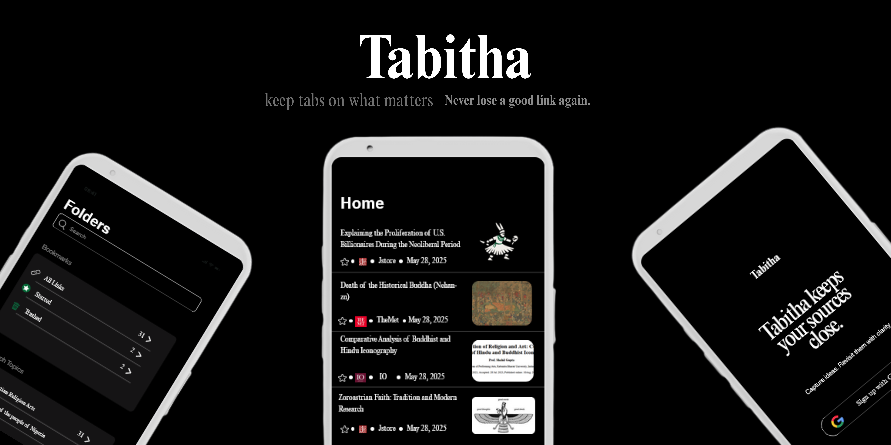
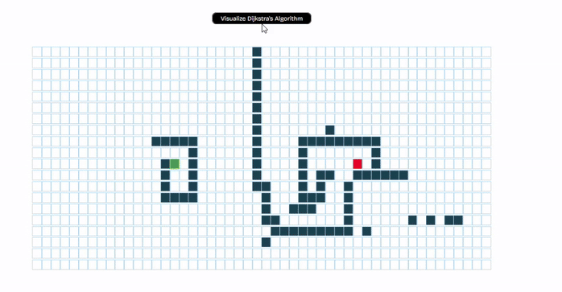
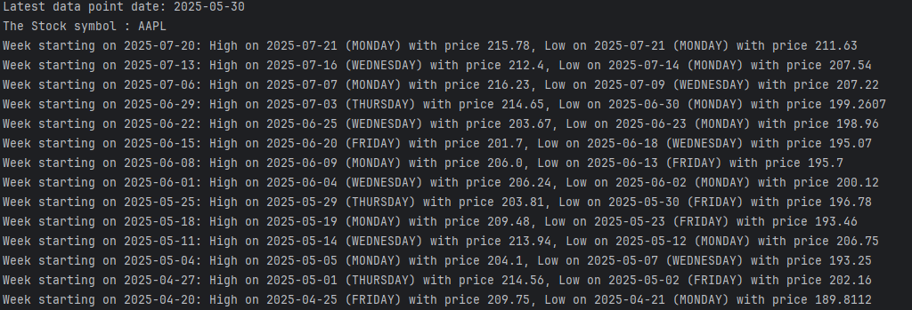
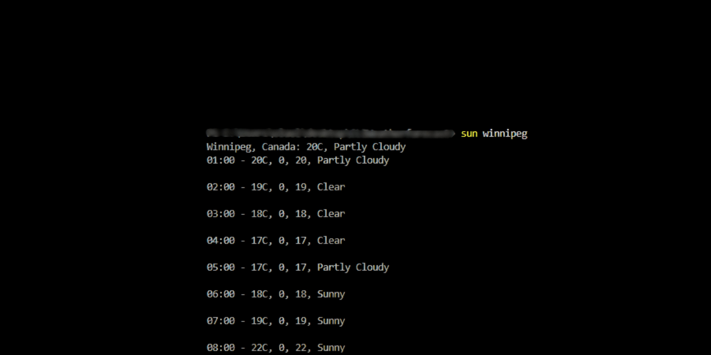
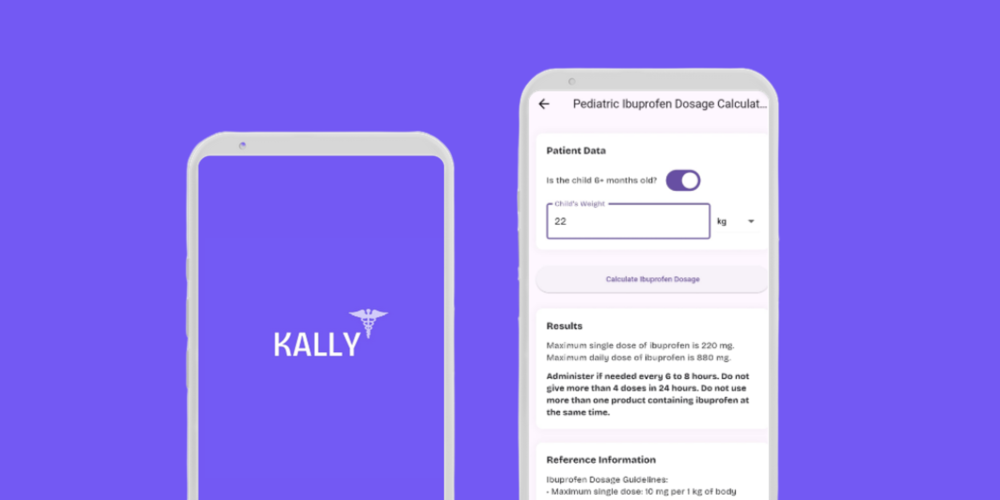
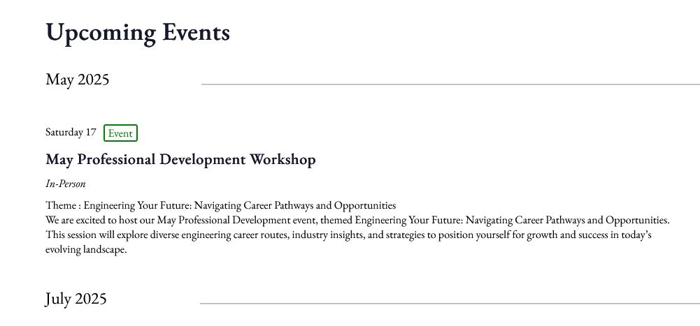
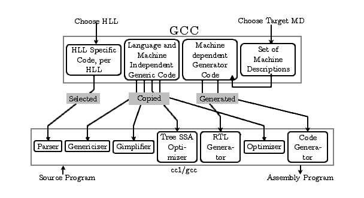

Olaoluwa Oke
I study Applied Computer Science at the University of Winnipeg,
where I founded and lead the university’s first Competitive Programming
team placing 14th in Canada at IEEExtreme and winning provincial gold at ICPC.
I’m a research assistant working on hybrid identity-based encryption for secure D2D communication.
This fall, I’ll be representing the university at the BE-STEMM
conference as an executive in the Canadian Black Scientist Network.
Previously, I spent over a year at SkipTheDishes supporting operations for one of Canada’s largest
food delivery platforms. I then conducted research on the sociological and psychological dynamics
of roommate relationships, studying patterns in shared living from 2015 to 2025. As a follow-up,
I built Awa, a roommate organizing app that translates
these findings into tools for coordinating chores, bills, and communication in co-living spaces.
Awa - A roommate organizing app
2025
Built Awa, a Spring Boot + MongoDB + Flutter app for coordinating roommate tasks and expenses.
The app translates 10 years of roommate behavior research into practical co-living tools.
Project Breakdown→

Tabitha - An app that lets you store bookmarks/links
2024
Built Tabitha, a Spring Boot + MongoDB + Flutter app for saving and organizing bookmarks across devices.
The app lets users categorize links, create folders, and access saved content in a clean, synced experience.
Project breakdown →
2D Tile-Based Adventure Game Engine (Java + Swing)
2024
I built a lightweight 2D game engine from scratch in Java using object-oriented
principles and low-level rendering with Java Swing. The game features a tile-based
world rendered as a 50×50 grid, where each entity (player or object)
interacts within a coordinate system driven by math — from movement to collision detection.
GitHub Repo →

Dijkstra Pathfinding Visualizer – React.js
2024
Built with React.js, the tool allows users to place start and end nodes, add walls as obstacles,
and watch the algorithm explore the grid step by step. I used React’s component-based structure
to manage grid state, animations, and user interactions,
and implemented the Dijkstra algorithm from scratch to handle the underlying logic.
GitHub Repo →

Stock Pattern Analyzer – Java + Alpha Vantage API
2024
This tool analyzes historical stock prices over a six-month period to identify weekly trends,
specifically highlighting the highest and lowest trading days of each week. I integrated the
Alpha Vantage API to fetch daily stock data and used Java's HTTP and JSON libraries to parse
and process the response. The core logic groups daily data into calendar weeks and applies custom
aggregation to
find the peak and dip of each week, including the day and value of the high and low.
GitHub Repo →

Therminal — The CLI thermometer for developers who code through winter.
2023
A lightweight CLI tool built in Go to check hourly weather straight from your terminal.
Designed for winter cities like Winnipeg, it tells you exactly when temperatures rise above brutal lows like –20°C.
Perfect for developers who work late and just want to know when it's safe to step outside.
GitHub Repo →

Kally - Kally — a smart, Flutter-built medical calculator for nursing and medical students.
2022
a comprehensive medical calculator built with Flutter, designed for nursing and medical students.
It covers over 100 clinical formulas across multiple specialties — from drug dosing to fluid rates, cardiology, renal, and more.
With support for multiple units and clear outputs, Kally simplifies complex calculations into fast, accurate, on-the-go answers.
GitHub Repo →

Engineers and GeoScientist Manitoba - Freelance
2024
I built the official website for Engineers Geoscientists Manitoba -Nigerian Chapter, the
governing body for engineering and geoscience professionals in the province.
The site was designed to serve as a central hub for members, students,
and the public—providing access to licensing information, event updates, application forms, and more.
Live Website →

Compiler from Scratch
2024
Built a compiler from scratch in C++, implementing a lexer, parser, and compiler for a
simpler version of C.